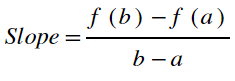
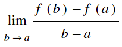
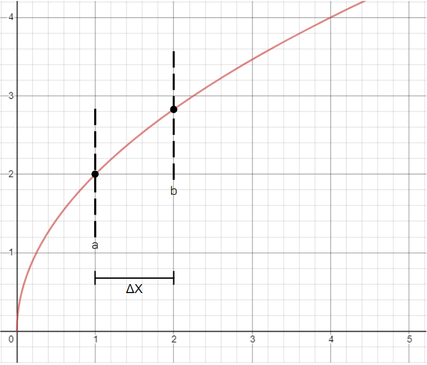
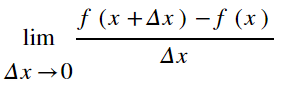
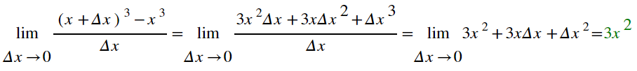

The Limit Definition of a Derivative
There are lots of "quick and dirty" formulas that tell you how to differentiate different types of functions, but it's worth taking a look at the formal definition of a derivative in order to help build intuition for what a derivative is. There are actually two forms of this definition, and they both utilize limits. Remeber that graphically, to find a derivative, we start by finding the regular slope between two points, then imagine sliding those two points closer to eachother until they are the same point (see the animation on the derivatives page). In other words, we want to see what the slope approaches as the two points approach each other, or as the distance between them approaches zero. This leads us right into our limit definition. Remember that the average slope of a function, f, between two points on the x axis, a and b, can be calculated using the following formula:

So, if we are looking for the value that the slope approaches as a and b approach the same value on the x axis, we can say that our derivative formula is equal to:

You can also think of it as finding the value that the slope approaches as the distance between the two points on the x axis approaches zero. Consider the graph below:

The graph shows the function y=√ 4x. There are points on the curve marked with dashed vertical lines. These are a and b. Rememer that a and b are the x-coordinate values of those points. The distance between the two points is ΔX. Now consider the original formula for slope given above. In our numerator, we have f(b)-f(a). From our graph above, we can see that the value of b is also the same as a + ΔX, right? So we can rewrite the numerator of our slope formula as f(a + ΔX) - f(a). Here, a represents the value on the x axis at which we want to find the tangent slope, so let's replace it with the letter x: f(x + ΔX) - f(x). The denominator of our simple slope formula above is b-a, which is equal to the distance between b and a on the x-axis. This distance is also ΔX in our graph above. All in all then, given the above graph, we can rewrite our slope formula as follows:

Since we want to find the value that this slope approaches as the distance between the points (Δx) goes to zero, we can find our derivative with the following limit:

Let's try a simple example using the function f(x)=x3. f(x + Δx) would just be (x + Δx)3. So, our derivative is:

And there's our derivative! For any value of x on the graph of y = x3, we can find the slope of the line tangent to the graph by plugging in that value of x into our derivative formula. However, the limit definition is quite tedious, so it's a wise policy to resort to other differentiation rules when finding the derivatives of large functions.
Oh! I should note, there are two special cases for derivatives where only simple logic is needed. Firstly, the derivative of a constant is always zero. This should make sense; the graph of a constant is just a horizontal line, so its slope is zero at every point. Secondly, for a linear function, say y = 4x, the derivative is just the value of the slope of the line, in this case 4. That should make sense too.
Oh! I should note, there are two special cases for derivatives where only simple logic is needed. Firstly, the derivative of a constant is always zero. This should make sense; the graph of a constant is just a horizontal line, so its slope is zero at every point. Secondly, for a linear function, say y = 4x, the derivative is just the value of the slope of the line, in this case 4. That should make sense too.